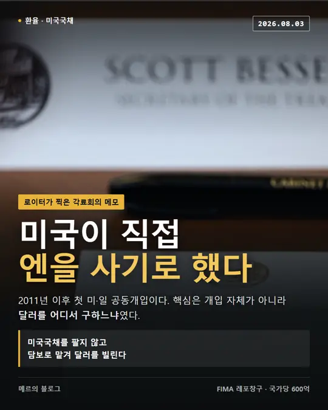
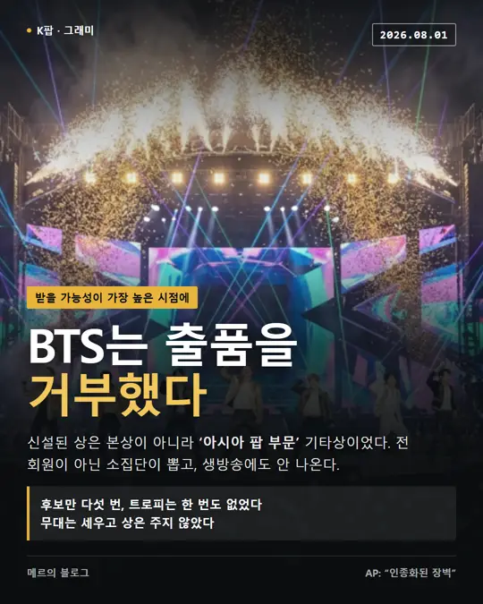
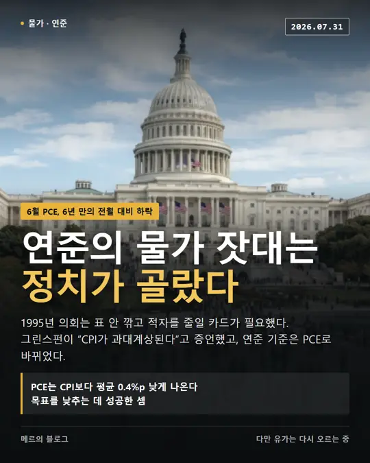

메르 브리핑
메르의 블로그 글을 카드와 서술 두 가지로 정리합니다. 카드는 훑기용, 서술은 원문보다 자세히 풀어 쓴 쪽입니다. 메르 님의 허락을 받아 운영하며, 원문은 여기 있습니다.

2011년 이후 첫 미·일 공동개입입니다. 그런데 진짜 관전 포인트는 개입 자체가 아니라 달러를 어디서 구하느냐였습니다.

“중국발 DUV 쇼크”에 ASML 주가가 하루 5.7% 빠졌습니다. 그런데 양산한다는 장비를 뜯어보면 ASML의 2008년 모델입니다.

국장에서는 1주가 체결되고 곧바로 회복돼 끝난 일이었습니다. 그런데 그 가격을 그대로 가져다 쓰던 곳에서 2분 만에 960계좌가 청산됐습니다.

상을 못 받을까 봐 피한 게 아닙니다. 받을 가능성이 가장 높은 시점에 거부했습니다. 문제는 그 상이 어떤 상이냐였습니다.

7월 초 1,550원이던 원달러가 월말 1,435원까지 왔습니다. 같은 기간 달러인덱스는 0.2% 내렸을 뿐이라, 원인을 안에서 찾아야 합니다.

6월 PCE가 6년 만에 전월 대비 떨어졌습니다. 그런데 연준이 왜 CPI가 아니라 PCE를 보게 됐는지를 알면 이 숫자가 달리 보입니다.

금리는 동결됐지만 반대표 3명은 인하가 아니라 인상이었습니다. 그리고 새 의장은 앞으로 힌트를 주지 않겠다고 했습니다.

서킷브레이커는 28년간 6번 걸렸습니다. 올해는 7개월 만에 9번입니다. 그리고 예전과 달리 국민연금이 받아주지 않고 있습니다.

중국이 6월 23일 해외 우회 투자 통로를 막았습니다. 신규만이 아니라 갱신까지 막힌 탓에, 만기가 돌아오는 대로 청산이 이어지고 있습니다.